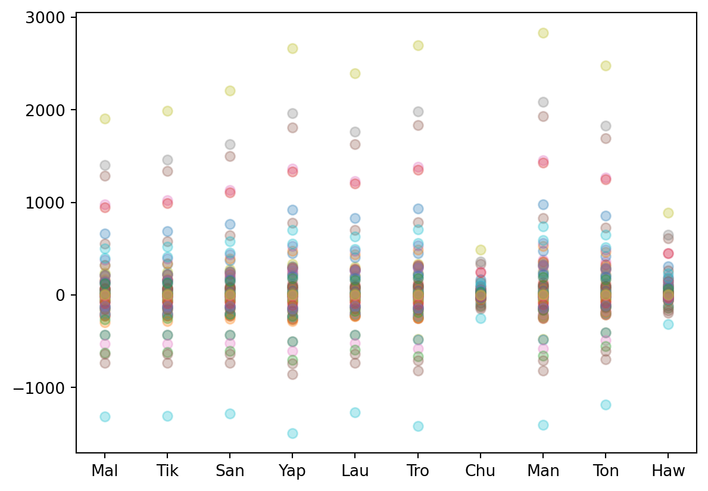
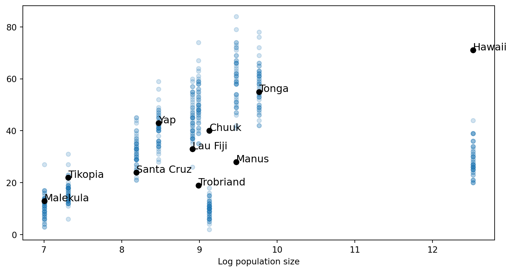
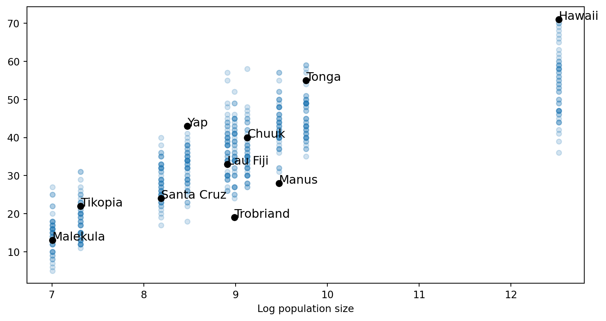

To me, the most interesting question in the social sciences is what statistical practice will look like in 20 years. Criticisms of null hypothesis significance testing has become mainstream. Even if p-values still dominant the publication landscape, many of other approaches to analysis are making it into major journals. At the same time, the software that lets people build more customizable, interesting models has been getting faster and more accessible. Sometimes it feels like our biggest challenge is that we don’t quite know what to do with all this power. As a community we need more examples of what another statistical practice might look like.
I previously wrote about a case where I took a toy mechanistic model and fit it to the small dataset with 10 islands in Oceania. What’s cool about this sort of analysis is that you don’t need to substitute out your mechanistic model for a linear regression when performing data analysis. That sort of substitution can introduce all sorts of complications in reasoning from one model to another. The approach where you fit a mechanistic model is much clearer and, when the model inevitably fails, the failures take on a importance within the framework of the theory.
This post is a sequel. I’m going to continue working with that case study and show a small bit about how to iteratively tailor a toy mechanistic model to the messiness of the world.
Sometimes you just need to integrate
The demographic theory of technology is a toy model that relates population size to the advancement of technical skills. In many areas of social science, model-based thinking is valued for its ability to rigourly connect individual-level behavioural thinking to population outcomes. For full details, you’ll need to read part 1. To summarize though, we have two parameters, \(a\) represents the inherit difficulty of learning a skill. This is shared by all individuals. \(b\) represents the individual variability in learning - different people are better or worse at imitating. We have a population with \(n\) people. The population-level process is a differential equation. This equation tells us how the average level of technical skill, denoted by \(z'\), changes at each point in time.
\[ z' = -a + b*(\gamma + \ln(n)) \]
Differential equations tell us how to get from one point in time to the next. But knowing how to step through time doesn’t give us the full story. We need to be able to predict how many tools each island society should have, given their population size and a length of time. Each society might have been innovating for different lengths of time which means population size doesn’t totally determine the outcome.
Fortunately, in this case, we can just integrate the equation with respect to time. One you specify \(a,b,n\), the growth rate is a constant. It doesn’t matter how many tools you already have, you’ll grow by the same amount in the next period. To know the number of tools have 30 time-steps, we just multiply the growth rate by 30. The technical skill on an island at a certain point in time is just:
\[ z = (-a + b*(\gamma + \ln(n)))*T \]
In the previous post, I suggested we’d need a differential equation solver to fit our model. That turned out to be erroneous. We can now fit our model much more quickly and the extra analytical rigour will allow us to derive a new model later down the road.
Fitting
We’ll import the same data.
import pandas as pdimport matplotlib.pyplot as pltimport pymc as pmimport numpy as npimport arviz as azimport networkx as nximport pytensor.tensor as ptfrom scipy import statsseed =1235rng = np.random.default_rng(seed)try: dk = pd.read_csv("Kline",sep=";")exceptFileNotFoundError: dk = pd.read_csv("https://raw.githubusercontent.com/pymc-devs/pymc-resources/main/Rethinking_2/Data/Kline",sep=";")times = [3000,3000,3000,3500,3000,3350,600,3350,2845,800]dk['initial_settlement (BP)'] = timesdk
culture
population
contact
total_tools
mean_TU
initial_settlement (BP)
0
Malekula
1100
low
13
3.2
3000
1
Tikopia
1500
low
22
4.7
3000
2
Santa Cruz
3600
low
24
4.0
3000
3
Yap
4791
high
43
5.0
3500
4
Lau Fiji
7400
high
33
5.0
3000
5
Trobriand
8000
high
19
4.0
3350
6
Chuuk
9200
high
40
3.8
600
7
Manus
13000
low
28
6.6
3350
8
Tonga
17500
high
55
5.4
2845
9
Hawaii
275000
low
71
6.6
800
Rename our variables to T for time, N for population size, and tools for the total tools present in a society.
T = dk['initial_settlement (BP)'].valuesN = dk.population.valuestools = dk.total_tools.valueslabel_id = dk.culture.values
The model can be expressed compactly with:
with pm.Model() as m0: a = pm.Gamma('a',mu=0.05,sigma=0.1) b = pm.Gamma('b',mu=0.005,sigma=0.01) mu = T * (-a + b*(np.euler_gamma + np.log(N))) Y = pm.Poisson("Y", mu=mu,observed=tools)
The priors need some justication. First, the Gamma distributions have really small means. That is because the population and time values are quite large. If you push their values up a bit, you’d have explosive growth in technology. Second, I tuned the priors by looking at prior predictive simulations. I want the bulk of the prior predictions to be below 1000. Some of our islands only have about 1000 people. It is certainly possible that everyone on an island is an inventor but its unlikely. I simply took draws from the prior and kept adjusting the parameters until the growth rates were fairly stable and represented wide uncertainty.
pp = pm.draw(mu,draws=100)ppshort_label = [i[:3] for i in label_id]for val in pp[:,:]: plt.plot(short_label,val,'o',alpha=0.3)

with m0: trace0 = pm.sample(2000,target_accept=0.99,progressbar=False,idata_kwargs={"log_likelihood":True},random_seed=rng)trace0.to_json("trace0")
We face a bit of challenge in fitting the model - the parameters \(a\) and \(b\) are collinear. Each represents a certain kind of difficulty and they can counterbalance each other. If \(a\) is high, the skill is uniformly difficult to learn. But if \(b\) is also high, it makes up for that because it provides more opportunities for novel innovation. So there are several combinations of \(a\) and \(b\) parameters that provide the same accuracy in predicting the oceania dataset. The figure below illustrates how the MCMC algorithm explores the parameter space. It travels back and forth on this narrow band of roughly equivalent posterior probability.
Collinearity is a medium-sized problem. It will inflate the uncertainty on our parameters. If we really cared to pin down the value of \(a\), we’d need extra information to first pin down the value of \(b\), or visa-versa. Or, we should scrape this model and build a new one where there is only one difficulty parameter. In our case, I don’t particularly care what value each parameter takes on. I’m more interested in whether our model can explain the available data.
Below I plot the predictions the model makes about island societies, given the estimated parameter values. I’ve plotted 50 random predictions to help represent the uncertainty propogating through the model. The model performs pretty well on 6 of the island societies, suggesting it could be an candidate explanation for dynamics of technical development in those societies. However, in Hawaii, Manus, Trobriand and Chuuk, the model doesn’t have a good way to predict them. Hawaii and Chuuk both have more tools that they are supposed, given their development time and population size. Meanwhile, Manus and Trobriand have too few tools.
At this point, it doesn’t look like the demographic theory of technology is very plausible. The worry persists even if you dealt with the collinearity problem. If you pushed the growth rate up a little bit, you’d over shoot Trobriand and Manus even more. If you pushed the growth rate down a little, the problem of Hawaii and Chuuk gets worse.
post_pred_m0 = pm.sample_posterior_predictive(model=m0,trace=trace0,progressbar=False)predictions = post_pred_m0.posterior_predictive['Y'].values.reshape((8000,10))fig, ax = plt.subplots(figsize=(9,5))for index inrange(len(label_id)): ax.text(np.log(N)[index], tools[index], label_id[index], size=12)for k inrange(50): i = np.random.randint(low=0,high=4000) plt.plot(np.log(N),predictions[i],'o',alpha=0.2,color="tab:blue",markersize=5)plt.plot(np.log(N),tools,'o',color="black")plt.xlabel("Log population size");
Sampling: [Y]

When it comes to fitting toy mechanistic models we have to be careful. They break more easily than linear regression. Frankly, I think that’s a good thing. If your model fits every dataset, you cannot learn from it. However! If a toy model breaks for opaque reasons, then it is also hard to learn from. In our case, it’s not initially easy to tell whether the demographic theory of technology is bunk or whether there are some simple features of the Oceanic societies that we have to add before the model works well.
The world is a complicated place. Many of those complications are case-specific - there are unique features of the history and geography of oceania that influence the distribution of technology. Toy models are usually developed to capture some core general features that should recur across a range of cases. Out-of-the-box they usually don’t fit any cases well.
The way I envision a productive scientific workflow is this: first we fit the toy model. Then we slowly layer on extra features to tailor it to some specific domain. If the toy model actually does capture some core mechanism in the world, it should start to fit nicely after a bit of tailoring. If the fit of the model doesn’t improve too much once we add the extra features, we should think there is something wrong with the core theory.
The Founder Effect
There is one thing left out of the model that feels inexcusable - people do not settle new islands empty handed. If a well-developed society in Fiji sends out explorers who stumble across Hawaii, the first settlers of Hawaii will bring with them the technical knowledge of Fiji. We can incorporate this information into the model by starting out each society from the technical level of their founder society.
I did some reading on the expansion of humanity into Oceania (especially useful was Matisoo-Smith (2015)) and pieced together a rough picture of how it happened. Below is a graph depicting the ancestry. Yellow societies were settled roughly 3500 years ago. Purple societies were settled within the last 1000 years. There is good deal of uncertainty in this map. For example, Fiji was likely settled by one of Santa Cruz, Tikopia or Malekula but we don’t know which. Pinning down these uncertainities would certainly help the project but I’ll leave them to the side at this point. As usual, my purpose is illustrate a style of statistical reasoning rather than decisively settle some scientific question.
We’ll need a new model where the level of technical skill is dependent on two factors: the demographic model for the settled society plus the level of technology present in the founder society at the time of founding. We’ll need to break the development time into two periods. In the first period, the founder society is innovating with its population size. In the second period, the ancestor society settles on the new island and now that island starts innovating autonomously with its population size. The dividing line between the two periods is just the difference in their development time.
For example, suppose we want a function that tells us how many tools Hawaii should have. Hawaii was settled 800 years ago. Tonga was settled 2845 years ago. So we’d want to let Tonga innovate for 2045 years, record what ever skill level is present. Then we’d switch to Hawaii and innovate for 800 years using Hawaii’s larger population size. Finally, we add the two skill levels together to get our final prediction.
Let’s generalize away from just Hawaii and Tonga to build an abstract model. Denote the founder society with subscript \(f\) and the settled society with subscript \(s\). The level of tools on the settled society by the time of observation is:
The expression is long but it is just the original expression for the settled society, plus running the model for the founder society with an abbreviated length of time (\(T_{f} - T_{s}\)). Now we’ll do a bunch of simplification and discover a surprisingly compact expression.
A surprisingly compact expression
First, we’ll expand the second term. That means multiply the original differential equation bit by \(T_{f} - T_{s}\)
Notice that the first and the last terms of the equations are almost the same - they have the core difference equation multiplied by \(T_{s}\). The only difference is that one uses the population of the settled society, \(\ln(n_{s})\), and the other uses the population of the founding society, \(\ln(n_{f})\). It will turn out we can exploit this fact to perform a lot of simplification. What is left will show that we only need to care about the ratio of population sizes to incorporate founder effects. It will also mean that we can leave the middle term completely untouched.
Let’s distribute the time terms on the left and right sides of this expression.
We’re done. We’ve arrived at what I call the founder model. The second half of the expression is the familiar expression for the founder society - it tells us what happens if we just let the founder society do all the innovating. The first half of the expression adjusts the original model based on how much time the settled society has been around and a ratio of their population sizes. When the settled society is bigger, the adjustment factor is positive. When the settled society is smaller, the adjustment factor is negative.
Fitting the founder model
Appreciably, this model assumes that each island immediately takes on its mature population size upon being settled. That’s silly. Population size is also a dynamic process. So some fairly important features of the world are left out. If you feel like that’s too big of an omission, I can understand. At the very least it makes salient exactly why this sort of analysis cannot succeed without substantially more data and thinking. I care a lot more about understanding the techniques and capacities of mathematical modeling than actually answering the question of whether the demographic theory is any good.
To program it up, it’s a bit tedious. We’ll need a unique equation for each island and lot of indexing. Regardless, we get the luxury of keeping just two free parameters.
with pm.Model() as m1:# Specify prior distributions a = pm.Gamma('a',mu=0.05,sigma=0.1) b = pm.Gamma('b',mu=0.005,sigma=0.01) y_yap = T[3] * (-a + b*(np.euler_gamma + np.log(N[3]))) y_manus = T[7] * (-a + b*(np.euler_gamma + np.log(N[7]))) y_trobriand = T[5] * (-a + b*(np.euler_gamma + np.log(N[5])))# descendents of trobriand y_santa_cruz = b*T[2]*pt.log(N[2] / N[5]) + y_trobriand y_tikopia = b*T[1]*pt.log(N[1] / N[5]) + y_trobriand y_malekula = b*T[0]*pt.log(N[0] / N[5]) + y_trobriand# descendents of malekula y_fiji = b*T[4]*pt.log(N[4] / N[0]) + y_malekula# descendents of fiji y_chuuk = b * T[6] * pt.log(N[6] / N[4]) + y_fiji y_tonga = b * T[8] * pt.log(N[8] / N[4]) + y_fiji# descendents of tonga y_hawaii = b * T[9] * pt.log(N[9] / N[8]) + y_tonga mu = pt.as_tensor([y_malekula,y_tikopia,y_santa_cruz,y_yap,y_fiji,y_trobriand,y_chuuk,y_manus,y_tonga,y_hawaii]) Y = pm.Poisson("Y", mu=mu,observed=tools)
Despite the strange functional specification, the model fits as easily as the first.
with m1: trace1 = pm.sample(2000,target_accept=0.99,progressbar=False,idata_kwargs={"log_likelihood":True},random_seed=rng)trace1.to_json('trace1')
We can now visualize the predictions. The model does a lot better explaining those islands that previously had too many tools. Chuuk is now squarely within the range of model uncertainties. Hawaii is closer. Manus and Trobriand are still a bit stubborn. This makes good sense - the structural changes we made meant that islands will, in general, have more tools than before. So if Trobriand and Manus previously had surprisingly few tools, we don’t have many new modeling tricks to explain that.
trace1 = az.from_json("trace1")post_pred_m1 = pm.sample_posterior_predictive(model=m1,trace=trace1,progressbar=False)predictions = post_pred_m1.posterior_predictive['Y'].values.reshape((8000,10))fig, ax = plt.subplots(figsize=(8,5))for index inrange(len(label_id)): ax.text(np.log(N)[index], tools[index], label_id[index], size=12)for k inrange(50): i = np.random.randint(low=0,high=4000) plt.plot(np.log(N),predictions[i],'o',alpha=0.2,color="tab:blue",markersize=5)plt.plot(np.log(N),tools,'o',color="black")plt.xlabel("Log population size");
Sampling: [Y]

Our visual intuition that the founder model is doing better is validated by model comparison statistics.
What I really like about this strategy of modeling is that we’ve improve the fit just by incorporating domain knowledge. Often, in statistical modeling, the techniques to improve fit involve making the model more flexible. With more adjustable parameters, a model will always fit better. But the improvement in fit doesn’t mean we are discovering the true mechanical structure behind the data. It often only means our model is more flexible. But here we didn’t increase the parametric flexibility. All we did was thought about the problem and did algebra. I think that’s an underappreciated but highly powerful technique.
I hope my position has become clear - toy models are easy to break but we should break them. Only by breaking them do we get our most informative analyses. When we slowly try to put them back together, we can often come up with clever structural adjustments to the model that improve fit without introducing inappropriate sorts of flexibility.
References
Matisoo-Smith, Elizabeth. 2015. “Ancient DNA and the Human Settlement of the Pacific: A Review.”Journal of Human Evolution 79 (February): 93–104. https://doi.org/10.1016/j.jhevol.2014.10.017.